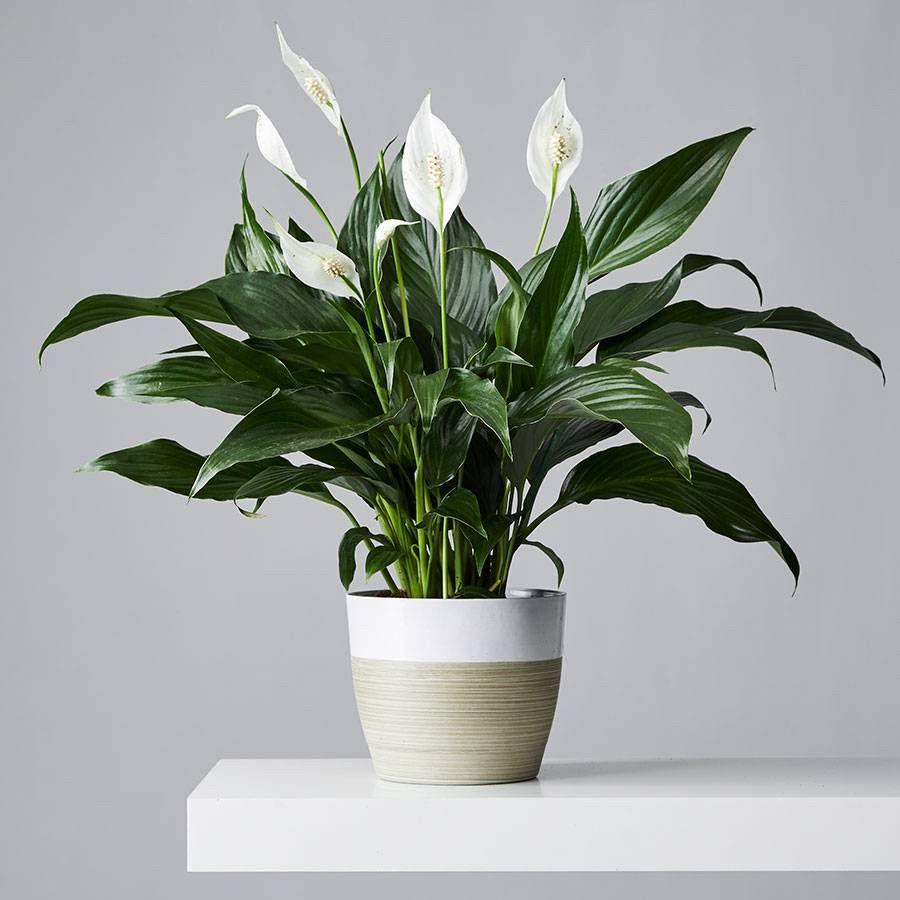
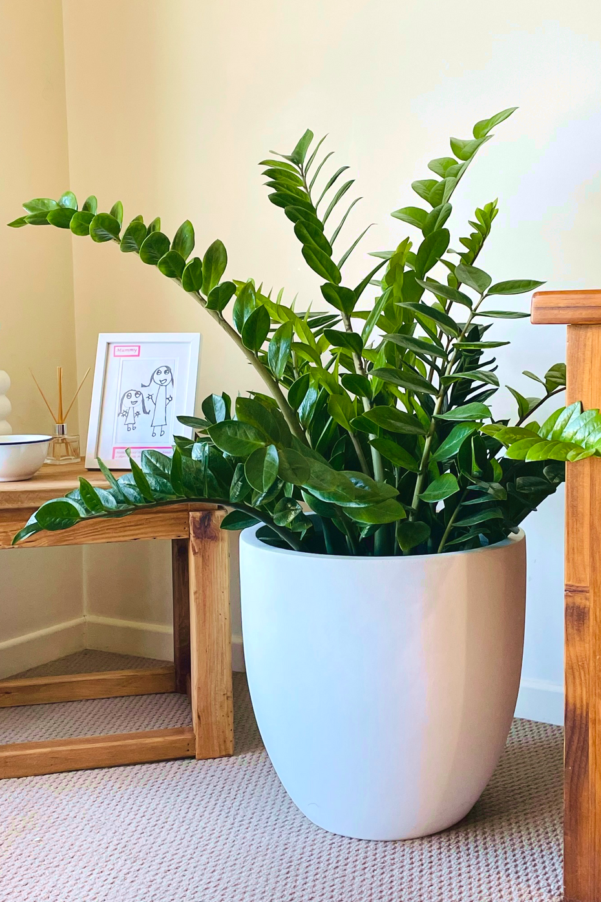

Pertence ao gênero de plantas Spathiphyllum com flores pertencentes ao pertencente à família Araceae. O género inclui as espécies conhecidas pelo nome comum de lírio-da-paz.
Pertence ao gênero de plantas Zamioculcas a é uma planta de interior conhecida pelas suas folhas verdes escuras, brilhantes e largas, de baixa manutenção, e pela sua incrível tolerância à seca, pois armazena água em rizomas subterrâneos.
